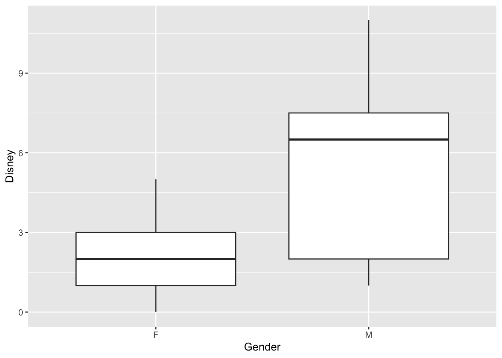
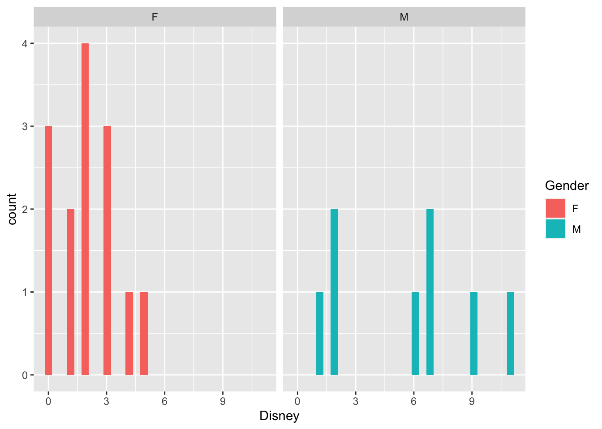

Chapter 23 Enter raw data
sundayBDI<-c(15, 35, 16, 18, 19,
17, 27, 16, 13, 20,
16, 15, 20, 15, 16,
13, 14, 19, 18, 18)
wedsBDI<-c(28, 35, 35, 24, 39, 32,
27, 29, 36, 35, 5, 6,
30, 8, 9, 7, 6, 17,
3, 10)
drug<-gl(2, 10, labels = c("Ecstasy", "Alcohol"))
Gender=gl(2, 10, labels = c("Male", "Female"))
drugData<-data.frame(Gender, drug, sundayBDI, wedsBDI)
drugData## Gender drug sundayBDI wedsBDI
## 1 Male Ecstasy 15 28
## 2 Male Ecstasy 35 35
## 3 Male Ecstasy 16 35
## 4 Male Ecstasy 18 24
## 5 Male Ecstasy 19 39
## 6 Male Ecstasy 17 32
## 7 Male Ecstasy 27 27
## 8 Male Ecstasy 16 29
## 9 Male Ecstasy 13 36
## 10 Male Ecstasy 20 35
## 11 Female Alcohol 16 5
## 12 Female Alcohol 15 6
## 13 Female Alcohol 20 30
## 14 Female Alcohol 15 8
## 15 Female Alcohol 16 9
## 16 Female Alcohol 13 7
## 17 Female Alcohol 14 6
## 18 Female Alcohol 19 17
## 19 Female Alcohol 18 3
## 20 Female Alcohol 18 1023.2 Exploratory analysis
## Rows: 20 Columns: 3
## ── Column specification ────────────────────────────────────────────────────────
## Delimiter: ","
## chr (1): drug
## dbl (2): sundayBDI, wedsBDI
##
## ℹ Use `spec()` to retrieve the full column specification for this data.
## ℹ Specify the column types or set `show_col_types = FALSE` to quiet this message.## # A tibble: 6 × 3
## drug sundayBDI wedsBDI
## <chr> <dbl> <dbl>
## 1 Ecstasy 15 28
## 2 Ecstasy 35 35
## 3 Ecstasy 16 35
## 4 Ecstasy 18 24
## 5 Ecstasy 19 39
## 6 Ecstasy 17 3223.3 Descriptive statistics.
Note here we can use drugData[,c(2:3)], that we want the stats for column 2 and 3, and these be seperated by the drug (column 1).
NOTE the shapiro wilks test on the last line.
## [1] "Gender" "drug" "sundayBDI" "wedsBDI"## drugData$drug: Ecstasy
## sundayBDI wedsBDI
## nbr.val 10.00000000 10.0000000
## nbr.null 0.00000000 0.0000000
## nbr.na 0.00000000 0.0000000
## min 13.00000000 24.0000000
## max 35.00000000 39.0000000
## range 22.00000000 15.0000000
## sum 196.00000000 320.0000000
## median 17.50000000 33.5000000
## mean 19.60000000 32.0000000
## SE.mean 2.08806130 1.5129074
## CI.mean.0.95 4.72352283 3.4224344
## var 43.60000000 22.8888889
## std.dev 6.60302961 4.7842334
## coef.var 0.33688927 0.1495073
## skewness 1.23571300 -0.2191665
## skew.2SE 0.89929826 -0.1594999
## kurtosis 0.26030385 -1.4810114
## kurt.2SE 0.09754697 -0.5549982
## normtest.W 0.81063991 0.9411413
## normtest.p 0.01952060 0.5657814
## ------------------------------------------------------------
## drugData$drug: Alcohol
## sundayBDI wedsBDI
## nbr.val 10.00000000 1.000000e+01
## nbr.null 0.00000000 0.000000e+00
## nbr.na 0.00000000 0.000000e+00
## min 13.00000000 3.000000e+00
## max 20.00000000 3.000000e+01
## range 7.00000000 2.700000e+01
## sum 164.00000000 1.010000e+02
## median 16.00000000 7.500000e+00
## mean 16.40000000 1.010000e+01
## SE.mean 0.71802197 2.514182e+00
## CI.mean.0.95 1.62427855 5.687475e+00
## var 5.15555556 6.321111e+01
## std.dev 2.27058485 7.950542e+00
## coef.var 0.13845030 7.871823e-01
## skewness 0.11686189 1.500374e+00
## skew.2SE 0.08504701 1.091907e+00
## kurtosis -1.49015904 1.079110e+00
## kurt.2SE -0.55842624 4.043886e-01
## normtest.W 0.95946584 7.534665e-01
## normtest.p 0.77976459 3.933024e-03
23.4 Test of equality of variance
This is one of the assumptions of parametric tests
#leveneTest(drugData$sundayBDI, drugData$drug, center = "mean")
leveneTest(drugData$sundayBDI, drugData$drug, center = "median")## Levene's Test for Homogeneity of Variance (center = "median")
## Df F value Pr(>F)
## group 1 1.8803 0.1872
## 18#leveneTest(drugData$wedsBDI, drugData$drug, center = "mean")
leveneTest(drugData$wedsBDI, drugData$drug, center = "median")## Levene's Test for Homogeneity of Variance (center = "median")
## Df F value Pr(>F)
## group 1 0.0911 0.7662
## 1823.5 Wilcoxon rank-sum test
wilcox.test(x, y = NULL, alternative = c(“two.sided”, “less”, “greater”), mu = 0, paired = FALSE, exact = FALSE, correct = FALSE, conf.level = 0.95, na.action = na.exclude)
23.6 This is how to assing the Rank by Hand…… This is an example, the scripts will do this automatically.
Look for the smallest value……in the wedsBDI……
## Gender drug sundayBDI wedsBDI wedsRank
## 1 Male Ecstasy 15 28 12.0
## 2 Male Ecstasy 35 35 17.0
## 3 Male Ecstasy 16 35 17.0
## 4 Male Ecstasy 18 24 10.0
## 5 Male Ecstasy 19 39 20.0
## 6 Male Ecstasy 17 32 15.0
## 7 Male Ecstasy 27 27 11.0
## 8 Male Ecstasy 16 29 13.0
## 9 Male Ecstasy 13 36 19.0
## 10 Male Ecstasy 20 35 17.0
## 11 Female Alcohol 16 5 2.0
## 12 Female Alcohol 15 6 3.5
## 13 Female Alcohol 20 30 14.0
## 14 Female Alcohol 15 8 6.0
## 15 Female Alcohol 16 9 7.0
## 16 Female Alcohol 13 7 5.0
## 17 Female Alcohol 14 6 3.5
## 18 Female Alcohol 19 17 9.0
## 19 Female Alcohol 18 3 1.0
## 20 Female Alcohol 18 10 8.023.7 Wilcoxon test: A non-parametric test
## [1] "Gender" "drug" "sundayBDI" "wedsBDI" "wedsRank"## Gender drug sundayBDI wedsBDI wedsRank
## 1 Male Ecstasy 15 28 12
## 2 Male Ecstasy 35 35 17
## 3 Male Ecstasy 16 35 17
## 4 Male Ecstasy 18 24 10
## 5 Male Ecstasy 19 39 20
## 6 Male Ecstasy 17 32 15## Warning in wilcox.test.default(x = DATA[[1L]], y = DATA[[2L]], ...): cannot
## compute exact p-value with ties##
## Wilcoxon rank sum test with continuity correction
##
## data: sundayBDI by drug
## W = 64.5, p-value = 0.2861
## alternative hypothesis: true location shift is not equal to 0## Warning in wilcox.test.default(x = DATA[[1L]], y = DATA[[2L]], ...): cannot
## compute exact p-value with ties##
## Wilcoxon rank sum test with continuity correction
##
## data: wedsBDI by drug
## W = 96, p-value = 0.000569
## alternative hypothesis: true location shift is not equal to 023.8 the following approach is better because it can deal with ties (values that are equal)
sunModel2<-wilcox.test(sundayBDI ~ drug, data = drugData, exact = FALSE, correct= FALSE, conf.int=T)
sunModel2##
## Wilcoxon rank sum test
##
## data: sundayBDI by drug
## W = 64.5, p-value = 0.2692
## alternative hypothesis: true location shift is not equal to 0
## 95 percent confidence interval:
## -1.000049 5.000033
## sample estimates:
## difference in location
## 1.000023wedModel2<-wilcox.test(wedsBDI ~ drug, data = drugData, exact = FALSE, correct= FALSE, conf.int=T)
wedModel2##
## Wilcoxon rank sum test
##
## data: wedsBDI by drug
## W = 96, p-value = 0.0004943
## alternative hypothesis: true location shift is not equal to 0
## 95 percent confidence interval:
## 18.00001 28.99996
## sample estimates:
## difference in location
## 23.5528123.10 How many time have you gone to Disney, and is there a difference between genders?
Use Wilcoxon Test
Disney=c(3,5,0,1,2,
0,2,0,2,3,
2,1,4, 3,
2, 1, 2, 6,7,
11, 7, 9)
Gender=c("F","F","F","F","F",
"F","F","F","F","F",
"F","F","F","F",
"M","M","M","M","M",
"M","M","M")
DF=data.frame(Disney,Gender)
DF## Disney Gender
## 1 3 F
## 2 5 F
## 3 0 F
## 4 1 F
## 5 2 F
## 6 0 F
## 7 2 F
## 8 0 F
## 9 2 F
## 10 3 F
## 11 2 F
## 12 1 F
## 13 4 F
## 14 3 F
## 15 2 M
## 16 1 M
## 17 2 M
## 18 6 M
## 19 7 M
## 20 11 M
## 21 7 M
## 22 9 M
## `stat_bin()` using `bins = 30`. Pick better value with `binwidth`.
##
## Wilcoxon rank sum test
##
## data: Disney by Gender
## W = 24, p-value = 0.02681
## alternative hypothesis: true location shift is not equal to 0
## 95 percent confidence interval:
## -6.999942e+00 -2.032046e-05
## sample estimates:
## difference in location
## -3.99993623.11 Comparing two related conditions: the Wilcoxon signed-rank test (similar to paired t-test)
23.11.1 Do not confuse with the Wilcoxon rank-sum test (similar to unpaired t-test)
We now want to compare the results from sunday and Wendsday, but now the data come from the same individuals. ## BDI = Becks depression index Change
## [1] 13 0 19 6 20 15 0 13 23 15 -11 -9 10 -7 -7 -6 -8 -2 -15
## [20] -8## Gender drug sundayBDI wedsBDI wedsRank BDIchange
## 1 Male Ecstasy 15 28 12 13
## 2 Male Ecstasy 35 35 17 0
## 3 Male Ecstasy 16 35 17 19
## 4 Male Ecstasy 18 24 10 6
## 5 Male Ecstasy 19 39 20 20
## 6 Male Ecstasy 17 32 15 15## Gender drug sundayBDI wedsBDI wedsRank BDIchange
## 1 Male Ecstasy 15 28 12.0 13
## 2 Male Ecstasy 35 35 17.0 0
## 3 Male Ecstasy 16 35 17.0 19
## 4 Male Ecstasy 18 24 10.0 6
## 5 Male Ecstasy 19 39 20.0 20
## 6 Male Ecstasy 17 32 15.0 15
## 7 Male Ecstasy 27 27 11.0 0
## 8 Male Ecstasy 16 29 13.0 13
## 9 Male Ecstasy 13 36 19.0 23
## 10 Male Ecstasy 20 35 17.0 15
## 11 Female Alcohol 16 5 2.0 -11
## 12 Female Alcohol 15 6 3.5 -9
## 13 Female Alcohol 20 30 14.0 10
## 14 Female Alcohol 15 8 6.0 -7
## 15 Female Alcohol 16 9 7.0 -7
## 16 Female Alcohol 13 7 5.0 -6
## 17 Female Alcohol 14 6 3.5 -8
## 18 Female Alcohol 19 17 9.0 -2
## 19 Female Alcohol 18 3 1.0 -15
## 20 Female Alcohol 18 10 8.0 -8## drugData$drug: Ecstasy
## median mean SE.mean CI.mean.0.95 var std.dev
## 14.0000000 12.4000000 2.5307004 5.7248420 64.0444444 8.0027773
## coef.var skewness skew.2SE kurtosis kurt.2SE normtest.W
## 0.6453853 -0.4140842 -0.3013525 -1.3686700 -0.5128991 0.9087803
## normtest.p
## 0.2727175
## ------------------------------------------------------------
## drugData$drug: Alcohol
## median mean SE.mean CI.mean.0.95 var std.dev
## -7.50000000 -6.30000000 2.09788253 4.74573999 44.01111111 6.63408706
## coef.var skewness skew.2SE kurtosis kurt.2SE normtest.W
## -1.05302969 1.23907117 0.90174219 0.98664006 0.36973617 0.82795980
## normtest.p
## 0.03161929
alcoholData<-subset(drugData, drug == "Alcohol") # subset the data for alcohol
ecstasyData<-subset(drugData, drug == "Ecstasy") # subset the data for ecstasy
alcoholModel<-wilcox.test(alcoholData$wedsBDI, alcoholData$sundayBDI, paired = TRUE, exact = TRUE, correct= FALSE)## Warning in wilcox.test.default(alcoholData$wedsBDI, alcoholData$sundayBDI, :
## cannot compute exact p-value with ties##
## Wilcoxon signed rank test
##
## data: alcoholData$wedsBDI and alcoholData$sundayBDI
## V = 8, p-value = 0.04657
## alternative hypothesis: true location shift is not equal to 0ecstasyModel<-wilcox.test(ecstasyData$wedsBDI, ecstasyData$sundayBDI, paired = TRUE, exact = FALSE,correct= FALSE) # Note that the option "exact=FALSE" has to be added becase there are ties.
ecstasyModel##
## Wilcoxon signed rank test
##
## data: ecstasyData$wedsBDI and ecstasyData$sundayBDI
## V = 36, p-value = 0.01151
## alternative hypothesis: true location shift is not equal to 023.12 Krukall-Wallis Test
This is a test similar to ANOVA, thus multiple groups, 3+ grupos
However, you test for the differences in than rank among groups (not the mean).
The null hypothesis is that the sum or mean rank in Ho: G1 = G2 = G3……Gk The alternative hypothesis is that at least one of the groups rank is different from another one.
23.13 Soya and the effect on sperm production in human males.
23.13.1 Soy food and isoflavone intake in relation to semen quality parameters among men from an infertility clinic
Jorge E. Chavarro Thomas L. Toth Sonita M. Sadio Russ Hauser Hum Reprod. 2008 Nov;23(11):2584-90. doi: 10.1093/humrep/den243. Epub 2008 Jul 23.
They found that the amount of sperm production is reduced in males which consume more soya
23.14 Abstract
23.14.1 BACKGROUND:
High isoflavone intake has been related to decreased fertility in animal studies, but data in humans are scarce. Thus, we examined the association of soy foods and isoflavones intake with semen quality parameters.
23.14.2 METHODS:
The intake of 15 soy-based foods in the previous 3 months was assessed for 99 male partners of subfertile couples who presented for semen analyses to the Massachusetts General Hospital Fertility Center. Linear and quantile regression were used to determine the association of soy foods and isoflavones intake with semen quality parameters while adjusting for personal characteristics.
23.14.3 RESULTS:
There was an inverse association between soy food intake and sperm concentration that remained significant after accounting for age, abstinence time, body mass index, caffeine and alcohol intake and smoking. In the multivariate-adjusted analyses, men in the highest category of soy food intake had 41 million sperm/ml less than men who did not consume soy foods (95% confidence interval = -74, -8; P, trend = 0.02). Results for individual soy isoflavones were similar to the results for soy foods and were strongest for glycitein, but did not reach statistical significance. The inverse relation between soy food intake and sperm concentration was more pronounced in the high end of the distribution (90th and 75th percentile) and among overweight or obese men. Soy food and soy isoflavone intake were unrelated to sperm motility, sperm morphology or ejaculate volume.
23.14.4 CONCLUSIONS:
These data suggest that higher intake of soy foods and soy isoflavones is associated with lower sperm concentration.
Now let us look at the data from Field, soya.csv.
## Rows: 80 Columns: 2
## ── Column specification ────────────────────────────────────────────────────────
## Delimiter: ","
## chr (1): Soya
## dbl (1): Sperm
##
## ℹ Use `spec()` to retrieve the full column specification for this data.
## ℹ Specify the column types or set `show_col_types = FALSE` to quiet this message.## # A tibble: 6 × 2
## Soya Sperm
## <chr> <dbl>
## 1 No Soya Meals 0.35
## 2 No Soya Meals 0.58
## 3 No Soya Meals 0.88
## 4 No Soya Meals 0.92
## 5 No Soya Meals 1.22
## 6 No Soya Meals 1.51## [1] "No Soya Meals" "1 Soya Meal Per Week" "4 Soyal Meals Per Week"
## [4] "7 Soya Meals Per Week"23.15 Hacer un boxplot de los datos en un nuevo chunk
library(ggplot2)
ggplot(Soyadf, aes(x=Soya, y=Sperm, fill=Soya))+
geom_boxplot()+
theme(axis.text.x = element_text(angle = 90))
Descriptive statistics When adding “norm=TRUE” will perform Shapiro_Wilks Normality test.
## Soyadf$Soya: 1 Soya Meal Per Week
## median mean SE.mean CI.mean.0.95 var std.dev
## 2.595000000 4.606000000 1.044821919 2.186837409 21.833056842 4.672585670
## coef.var skewness skew.2SE kurtosis kurt.2SE normtest.W
## 1.014456290 1.350565932 1.318645901 1.422731699 0.716825470 0.825831600
## normtest.p
## 0.002153894
## ------------------------------------------------------------
## Soyadf$Soya: 4 Soyal Meals Per Week
## median mean SE.mean CI.mean.0.95 var std.dev
## 2.945000e+00 4.110500e+00 9.861233e-01 2.063980e+00 1.944878e+01 4.410078e+00
## coef.var skewness skew.2SE kurtosis kurt.2SE normtest.W
## 1.072881e+00 1.822237e+00 1.779169e+00 2.792615e+00 1.407024e+00 7.427433e-01
## normtest.p
## 1.359072e-04
## ------------------------------------------------------------
## Soyadf$Soya: 7 Soya Meals Per Week
## median mean SE.mean CI.mean.0.95 var std.dev
## 1.3350000 1.6535000 0.2479774 0.5190226 1.2298555 1.1089885
## coef.var skewness skew.2SE kurtosis kurt.2SE normtest.W
## 0.6706916 0.6086712 0.5942855 -0.9161653 -0.4615984 0.9122606
## normtest.p
## 0.0703908
## ------------------------------------------------------------
## Soyadf$Soya: No Soya Meals
## median mean SE.mean CI.mean.0.95 var std.dev
## 3.095000000 4.987000000 1.136926165 2.379613812 25.852022105 5.084488382
## coef.var skewness skew.2SE kurtosis kurt.2SE normtest.W
## 1.019548502 1.546140856 1.509598499 2.328051363 1.172959394 0.805255802
## normtest.p
## 0.00103591723.16 Kruskall Wallis test is similar to an ANOVA without assuming normal distribution or equality of variance.
HO: R1=R2=R3=R4 HA: Por lo menos uno los grupos es diferente
##
## Kruskal-Wallis rank sum test
##
## data: Sperm by as.factor(Soya)
## Kruskal-Wallis chi-squared = 8.6589, df = 3, p-value = 0.03419## Loading required package: survival#Approximative (Monte Carlo) Fisher-Pitman test
modelkt=kruskal_test(Sperm~as.factor(Soya), data=Soyadf, distribution = approximate(nresample = 10000))
modelkt##
## Approximative Kruskal-Wallis Test
##
## data: Sperm by
## as.factor(Soya) (1 Soya Meal Per Week, 4 Soyal Meals Per Week, 7 Soya Meals Per Week, No Soya Meals)
## chi-squared = 8.6589, p-value = 0.032#op <- par(no.readonly = TRUE) # save current settings
#layout(matrix(1:3, nrow = 3))
#s1 <- support(modelkt); d1 <- dperm(modelkt, s1)
#plot(s1, d1, type = "h", main = "Mid-score: 0",
# xlab = "Test Statistic", ylab = "Density")
#pperm(modelkt, q=c(0.05, 0.5, 0.95))
#s=support(modelkt)
#quantile(s, c(.025, 0.975))## # A tibble: 6 × 3
## Soya Sperm Ranks
## <chr> <dbl> <dbl>
## 1 No Soya Meals 0.35 4
## 2 No Soya Meals 0.58 9
## 3 No Soya Meals 0.88 17
## 4 No Soya Meals 0.92 18
## 5 No Soya Meals 1.22 22
## 6 No Soya Meals 1.51 30## Soyadf$Soya: 1 Soya Meal Per Week
## [1] 43
## ------------------------------------------------------------
## Soyadf$Soya: 4 Soyal Meals Per Week
## [1] 48.5
## ------------------------------------------------------------
## Soyadf$Soya: 7 Soya Meals Per Week
## [1] 25.5
## ------------------------------------------------------------
## Soyadf$Soya: No Soya Meals
## [1] 50.5Post Hoc TUKEY like test (Nemenyi test) The values shown are the p=values, the pair are significantly different if the p is below 0.05
23.16.1 Note
dist=“Tukey”, correction for ties done
##
## Pairwise comparisons using Tukey-Kramer-Nemenyi all-pairs test with Tukey-Dist approximation## data: Sperm by as.factor(Soya)## 1 Soya Meal Per Week 4 Soyal Meals Per Week
## 4 Soyal Meals Per Week 1.000 -
## 7 Soya Meals Per Week 0.101 0.101
## No Soya Meals 0.991 0.991
## 7 Soya Meals Per Week
## 4 Soyal Meals Per Week -
## 7 Soya Meals Per Week -
## No Soya Meals 0.048##
## P value adjustment method: single-step## alternative hypothesis: two.sidedmodel1=kwAllPairsNemenyiTest(Sperm~as.factor(Soya) , data=Soyadf) # para más detalles
summary(model1)##
## Pairwise comparisons using Tukey-Kramer-Nemenyi all-pairs test with Tukey-Dist approximation## data: Sperm by as.factor(Soya)## alternative hypothesis: two.sided## P value adjustment method: single-step## H0## q value Pr(>|q|)
## 4 Soyal Meals Per Week - 1 Soya Meal Per Week == 0 0.000 1.000000
## 7 Soya Meals Per Week - 1 Soya Meal Per Week == 0 3.233 0.101209
## No Soya Meals - 1 Soya Meal Per Week == 0 0.423 0.990680
## 7 Soya Meals Per Week - 4 Soyal Meals Per Week == 0 3.233 0.101209
## No Soya Meals - 4 Soyal Meals Per Week == 0 0.423 0.990680
## No Soya Meals - 7 Soya Meals Per Week == 0 3.657 0.047845 *## ---## Signif. codes: 0 '***' 0.001 '**' 0.01 '*' 0.05 '.' 0.1 ' ' 1